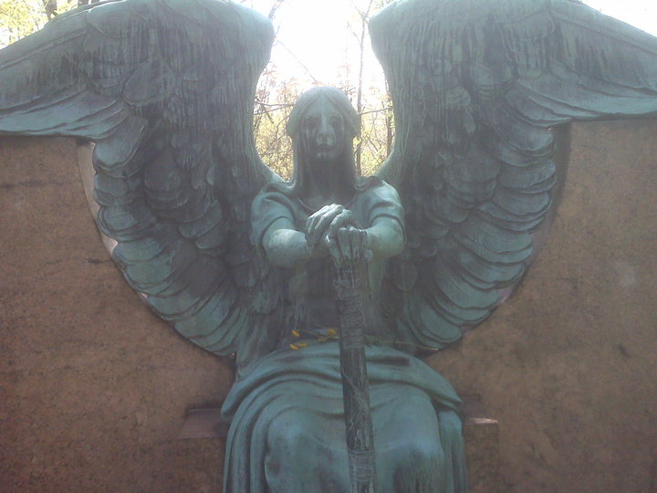
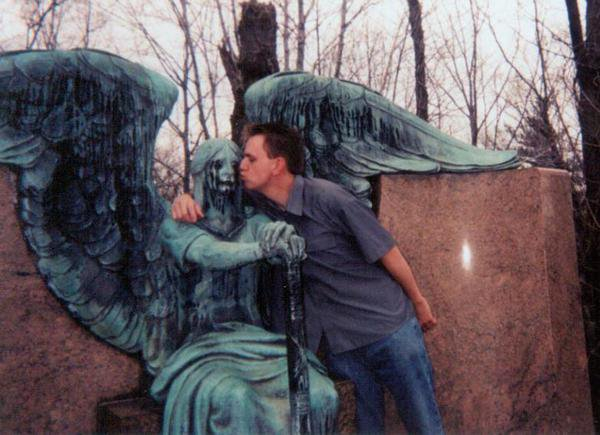

Forgotten Ohio: October 24, 2014
Forgotten Ohio
Friday, October 24, 2014
A Haunted Graveyard for Halloween
Profiled for today's update is the scenic (and notoriously haunted) Cedar Hill Cemetery in Newark. Go for the ghosts; stay for the scenic views of Licking County. My photos were taken on one of the coldest days of the obscenely cold winter just past.

The Angel of Death and YOU

Mortuary art simply doesn't get any better than the nightmarish guardian of the Haserot family plot at Lake View Cemetery. "The Angel of Death Victorious," aka the Haserot Death Angel, is so irresistible that seemingly every twisted tourist takes at least one photo posing with her. I've been shown more than I can count.

Hey look, that's me! I mostly keep my goofy-ass self off the website, even when I'm in a magazine article or something, but in this case I'll use my own example to get things started. Send me your own Haserot pictures--pictures of you and/or others posing with the Angel of Death herself--and I will post them in the new gallery I'm creating. I'd like to include names and hometowns, but will of course leave anyone anonymous if they prefer.
If you're looking for a well-organized, well-equipped group of ghost hunters, check out Mid-Ohio Paranormal Exploration Researchers (MOPER), a team headed up by my friend Kylie. They do very thorough work, always with permission, and record a surprising number of startling EVPs. MOPER also has a very active schedule. Check them out on Facebook.
Mid-Ohio Paranormal Exploration Researchers
https://www.facebook.com/midohioparanormalexplorationresearchers
Finally, you should definitely take a moment and watch this incredible YouTube video created by user TaraKitaideHunter. It edits my own Moonville Tunnel page into a video presentation with haunting music by Sun Kil Moon. I could not be more honored. Moonville was the first place I ever visited for Forgotten Ohio (when I was a sophomore at OSU) and it's one incredible legend I've collected a lot of information on, but this video manages to capture the creepy/irresistible essence of the legends better than I have. Please do take a moment to leave a comment on YouTube.
I'm on Facebook; so are you. It's the law. Please do check out the Forgotten Ohio Group; I didn't create it, but it's amazing and contains material by me and others, and plenty of stuff not found on the website.
And I'm long overdue in posting my personal Facebook info. Here it is, soon to be attached to every page below my e-mail address:
Andy Henderson
I am reading:
FICTION - Out, by Natsuo Kirino
NONFICTION - The Magnetic North, by Sara Wheeler
I am listening to:
Vampire Weekend, "Step"
Current Update
Next Update
. . . . . . .
Previous Update